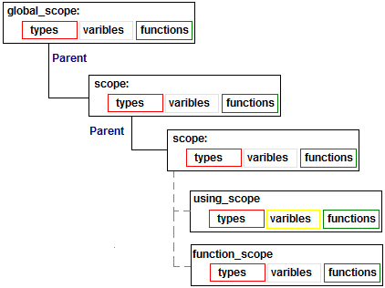

Script Scope
The purpose of Script Scope is to resolve names:
- Names of variables: associate value with name, return value by given name;
- Resolve types by given name;
- Associate name with
IInvokable object.
Script scopes forms tree hierarchy:

There are different types of scopes: local function scope, using statement scope, etc. All of them are used to resolve names: either variable's,type's,function's name or method's and properties' names in of certain object in case of using statement. It is possible to inherit and implement a Scope class to introduce custom behavior of name resolution.
Before script execution the user can add objects,types and functions into Script's scope,
so they will be available for script.
Example:
List
See Also
Copyright 2008, Petro P. Protsyk
8 August 2008